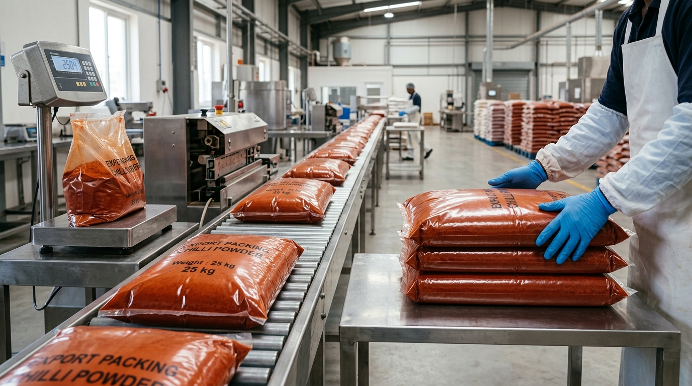
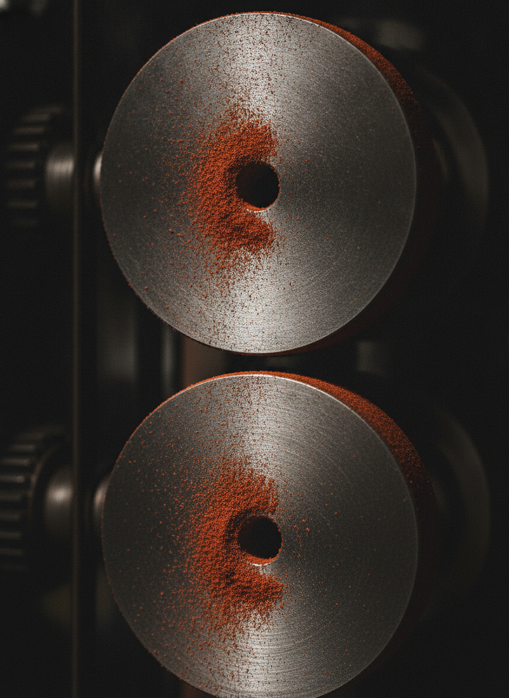

Home / Our process
A short supply chain, watched at every gate.
The journey from a farmer's field to a sealed, lab-released export bag — with no unnecessary hands in between.
Source → sort → process → pack.
Each crop follows the same disciplined path. The shorter and cleaner the chain, the more of the farm-gate flavour survives to your kitchen.

SourceFrom the right belt
We buy in the regions each crop is famous for, working close to growers to select lots by variety, season and quality — not by whoever is cheapest that week.

SortCleaned & graded
Lots are de-stoned, winnowed and cleaned, then colour-, size- and defect-sorted by hand and machine so only premium material moves on.
ProcessCold-pressed to spec
Whole spice is shipped as-is; powders are cold-press milled at low RPM to your target mesh, keeping temperatures — and the volatile oils — under control.

PackSealed, coded & released
After a passing lab report, every lot is given a traceable code and packed in food-grade, moisture-barrier export formats ready for the container.

Why we grind cold and slow.
Aroma and pungency live in a spice's volatile oils. Conventional high-speed hammer mills spin so fast they heat the spice — and that heat boils those oils off as you grind.
Our cold-press, low-RPM mills run slowly enough that the spice barely warms. The result is a powder that still smells of the whole spice it came from: brighter coriander, redder chilli, deeper turmeric — with the essential-oil content the lab can actually measure.
- Low heat — protects volatile oils, colour and pungency.
- Mesh to order — milled to the particle size your line needs.
- Dedicated runs — no cross-contamination between crops or lots.
The facility behind the spec sheet.
A clean, controlled environment from intake to dispatch — built so quality is the default outcome, not a lucky one.
Intake & storage
Incoming lots are inspected, documented and stored in dry, ventilated conditions that protect moisture and colour before processing.
Cold-press milling hall
Low-RPM mills with crop-dedicated lines, sieving and metal detection to keep every powder clean and consistent.
In-line QC & lab
Sampling and testing at intake and pre-dispatch, with third-party lab confirmation for export-grade lots.
Hygienic handling
Food-grade contact surfaces, controlled access and documented cleaning between runs.
Packing & coding
Export bags filled, weighed, sealed and lot-coded — with packaging matched to each destination market.
Dispatch & logistics
Container loading and export documentation coordinated so lots leave on schedule with their papers in order.
Want to see a lot run to your spec?
Send us your target grade, mesh and volume — we'll process a documented sample and share its lab report.